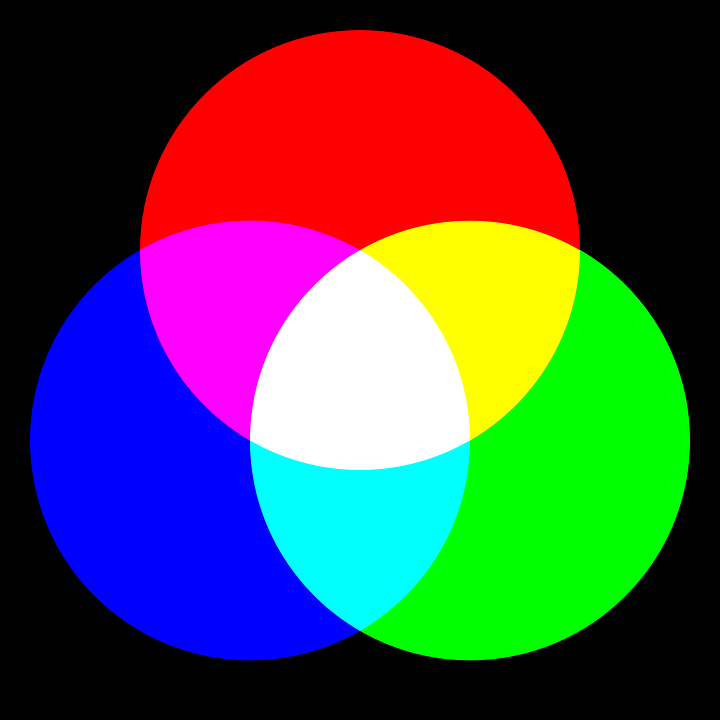
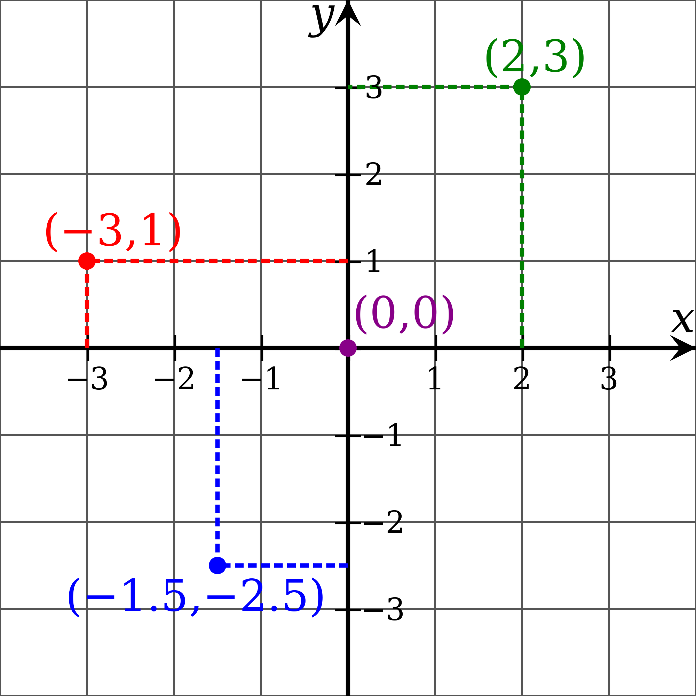
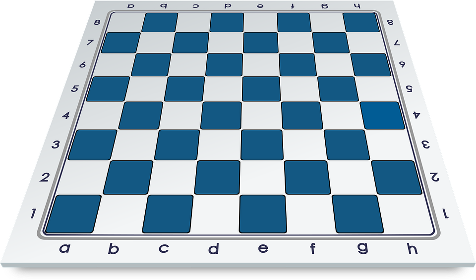

Previously, we have used only the predefined basic types integer, rational, boolean and string.
In this chapter we will take a look at user defined enumeration and composition types.
Additionally, we will also learn to use the generic list type.
Let us first take a look at the picture below.

We see the color representation of the RGB color system.
In this system, we can code any color by combining three colors: red, green and blue.
We will not go indepth just yet, for now we want to know how we would declare a colorRGB variable and assign it a simple value, either red, green or blue.
Certainly we could use the data type string, just like that:
However, this way, nothing prohibits us to assign a different value.
For example "yellow" or even "apple", which may be not relevant to the RGB system, but may not even be semantically a color at all.
Of course, we could implement if ... else checks, but this would possibly make our program more complicated the bigger it gets.
An even better example would be names of the days of a week: monday, tuesday, wednesday, thursday, friday, saturday and sunday.
Thus, we need another mechanism to define our own finite set of values and assign them to a type.
This leads us to our first user defined type: enumeration
So, we have defined our own type with a set of values, we can now use this type to declare variables.
Such variables are restricted to the values, defined in this type.
As we can see, we have to access these values using their qualified names.
Similarly how we have to type IO.writeString() instead of just calling writeString() directly.
Let us expand this example by adding another type CMY:
Try to uncomment the last line.
As the comment suggests, this line will produce a compiler error.
Just as we can not assign a string value to an integer variable, we cannot assign a CMY value to an RGB variable.

Sometimes we have data, which is combined of several other pieces of information.
For example, a point in a two dimensional coordinate system is a combination of two coordinates: x and y.
Thus we have points like p1(0, 0) or p2(2, 3).
When translating such information into a program, we could of course just use several variables:
However, as you can probably imagine, this will lead to a large amount of variables.
Even more if we move into three dimensional space or to try to represent other entities, like cars or people, which may have a amount of different data.
This solution is in the long run hard to maintain and prone to errors.
Instead, we can declare composition types, which allow us to sture data in a structured way.
Therefore, a composition is a data structure.
The example below shows how we can use compositions to define data composed of several values:
As we can see, we can declare a composition type which included several attributes.
Attributes are in a sense similar to variables, i.e. they are named containers for values.
The difference is that they are contained within a composition.
Once we have declare a composition type, we can use it to declare variables.
We can then access the attribues via the variable using their qualified names and set their values.
Let us expand this example a little:
We have added a second type called Point3D, which represents points in a three dimensional space.
As we can see, both point types have x and y coordinates represented by the respective attributes.
We don't have a naming conflict here, since these attributes exist in different namespaces.
Using the compositions we can now define our own data types which act as a structured combination of different values.
In compositions, the stored values are accessed by their names.
Let us use a slightly different example.
This time we want to specify wheeled vehicles, e.g. cars or trucks.
We will keep our scenario simple, our vehicles will have a type, i.e. is it a car or a truck, a manufacturer, e.g. a BMW or Daimler, and a horsepower attribute.
Meaning that our vehicles could be defined like this: Vehicle{type, manufacturer, horsepower}.
We have a limited number of vehicle types and manufacturers, meaning that we could use enumerations to specify the respective values.
As for horsepower, we can simply use integer.
The output of the program is:
In this example we have seen, how we can combine several user defined types to implement a slightly more complex scenario.
Finally, we can use instead of setting attributes for composition variables in each separate line, we can use the standard notation for composition values:
bmw1 := Vehicle{vehicleType = VehicleType.PKW, manufacturer = Manufacturer.BMW, horsepower = 134}
Most of us have some experience writing lists, be it shopping lists, todo lists, or somethin else.
Therefore, we already have a slight conceptional understanding of what a list is.
So, without further ado, let us implement a shopping list:
In programming, a list is a data structure meant to store data in a structured way.
Unlike compositions, which are also data structures, lists do not allow to store values of different types in a single list.
Meaning that we cannot store cars in our shopping list, only strings since we have declared it as a list of strings.
However, the list itself is more flexible, as we can store as many values as we like, unlike in a composition, in which values are stored in predefined attributes.
List values can be accessed via their index, the first value has index 0, the last value has index lengthOfList - 1.
As we have said, lists are quite flexible, especially when used with the Lists library.
For example, the append operation creates a new list from a paramter list and an element.
Basically it takes a list, appends and element to it and yields a new list as a result.
The original list is not changed, i.e. we have to overwrite the original list if we want to keep one variable.
Loops and lists go hand in hand.
You will probably spend a lot of time iterating over collections, so let us demonstrate another example.
Feel free to copy it into your eclipse, set up a breakpoint and iterate step by step to see what happens.
The produced output is:
We know we may have just dropped quite a lot of information on your head.
To better digest it, here is a short summary of what you can do with lists:
Additional functionality is offered by the Lists library.
Here is only a small selection of operations:
Previously, we have demonstrated how we can combine enumerations and compositions in a single scenario.
Same applies to our lists, since it is a generic type, we can declare lists of any other type, even user defined.
In this scenario, we want to create a list of two dimensional points and then set their coordinates depending on their position in the list.
Read the comments in the code, and of course run the program in you Eclipse.
As we have mentioned earlier, we can create lists of any other type.
Since lists are also a type, we can create lists of lists, which leads us to multi-dimensional lists.
Such data structures can be used to simulate tables or, for example, boardgames.
In the following scenario, we will implement a chessboard, for now as a simple two dimensional list of strings.

Let us start small by creating a two dimensional list of strings and printing it in a readable form:
This is the produced output so far:
If we look at our chessboard, we will see that each field has specific coordinates.
We want to store these coordinates in the string entries of our implemented chessboard.
Previously we have learned, that each entry in a list has an index at which it is located.
Same applies to two-dimensional lists, however we need two indices to access the string entries
As an example, chessboard[0][0] will give us the upper left entry.
Since we have 8 * 8 combinations of indices, or to put it simple, we need two loops to iterate over each entry in our 2d list.
So let's do this and fill each entry with its actual coordinates:
Our output has changed, we can clearly see the coordinates of each entry depending the values which we have calculated using two nested loops:
We are still a bit unhappy with the results, as we can see, the lower left field has the coordinate 7-0.
However, if we look at the image above, we can see that that particular field has the coordinate 1a.
We need to translate our logical coodrinates into chessboard coordinates.
First, let us translate the logical i coordinate into chessboard number coordinate.
As already said, 7 should be 1, meaning that 6 should be 2 and 0 should be 8. Can you recognize a pattern?
8 - 7 = 1, 6 - 2 = 3, ..., 8 - 0 = 8, meaning that our chessboard number coordinate is 8 - indexOfInnerList or 8 - i.
The chessboard character coordinate depends in the column, i.e. the index of each entry in the inner list or j in our case.
We can define a list of strings filled witch characters a to h and get each character using j as index.
As we can see, we now have the actual chessboard coordinates in our entries:
For now we are happy with the results, however, we will expand this example in the future.